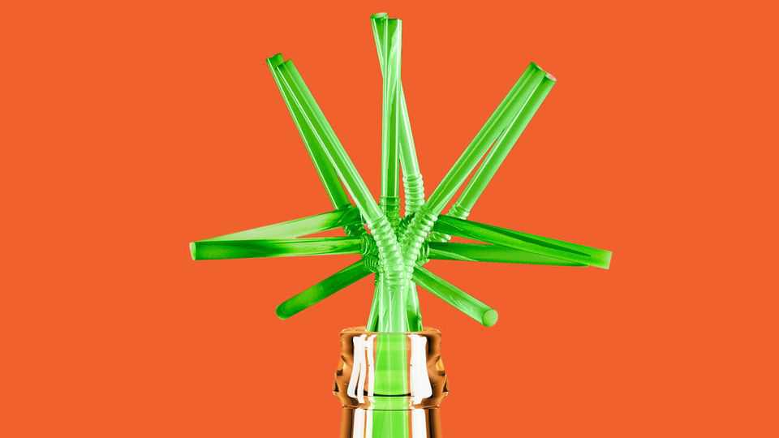

America’s cannabis-drinks market is booming—and imperilled
This reflects the country’s two-faced attitude towards the drug

Aug 27th 2026
Possession of any amount of recreational cannabis is an imprisonable offence in Texas. And yet in many places where Texans buy beer, they can also find drinks infused with tetrahydrocannabinol (THC), the psychoactive component of cannabis. THC drinks are flying off the shelves—and not just in the Lone Star State. Their rise stems from changing social mores and regulatory confusion.
Start with the first. Alcohol sales are declining as youngsters drink less than older generations. But some teetotallers welcome a buzz. THC was once stigmatised for leaving users sprawled and giggling on the sofa, wrist-deep in a bag of crisps. Today, though, it has a veneer of “wellness”.
Many THC drinks have few or no calories; some include ostensibly healthy extras such as plant extracts. Makers boast that they do not cause hangovers. Some restaurants have even started to offer them, noticing a rise in “cocktail culture”. thc drinks come in a variety of strengths, so pay careful attention to the dosage: consuming 25mg rather than 2.5mg can lead to several deeply unpleasant hours.
According to the Hemp Beverage Alliance, a trade group, in 2025 the number of distribution points more than doubled (from 133,500 to 306,000), as did the sales by volume (from about 700,000 case equivalents to 1.6m), from a year earlier. The Brightfield Group, a cannabis consultancy, predicts that revenue from THC drinks could exceed $4.4bn by the end of the decade, up from less than $200m in 2020. Total Wine, America’s biggest wine retailer, sells them in 22 states (there are 24 where cannabis is illegal).
Their rise is owed partly to the morass of legislation governing American agriculture, known as the farm bill. Its most recent version lets farmers grow hemp with a THC content of no more than 0.3% by dry weight; anything stronger is classified as marijuana and remains illegal under federal law. But manufacturers can extract THC from large quantities of legal hemp and use it to make drinks containing intoxicating doses.
Anti-cannabis lawmakers have noticed: last year Congress passed legislation that would limit THC to 0.4mg per container, in effect killing the hemp-drinks sector. But the Senate recently voted to briefly postpone the crackdown, and on August 10th a bipartisan bill was introduced that would exempt THC drinks from the restrictions and regulate them like alcohol. Its sponsors do not want to kill a golden, if slightly stoned, goose.
This would open the federal government to charges of hypocrisy for approving one form of hemp while outlawing another. But it would also boost businesses and protect a steady stream of tax revenue. The industry is already high. Whether it becomes mighty—or goes up in smoke—will depend on lawmakers. ■